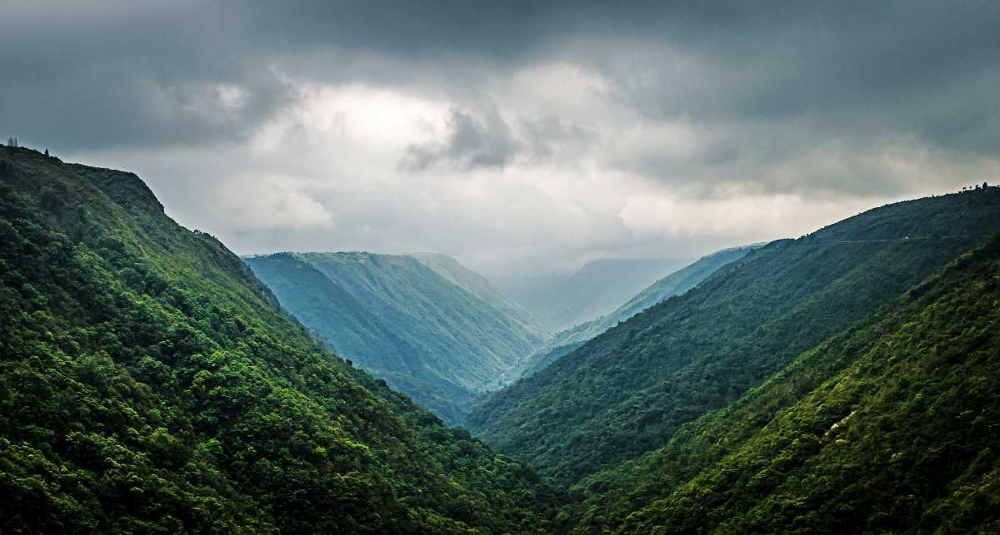

Meghalaya will surprise you with a myriad of attractions it has in store for you. Escape to lush green valleys and forests that encapsulate Meghalaya, a pine-fresh mountain state in the Northeast. Here are some places to visit in Meghalaya that you should note to explore Meghalaya.
- Cherrapunji
- Shillong
- Elephant Falls
- Double-decker Living Root Bridge
- Mawsynram
CHERRAPUNJI
Cherrapunji is regarded as one of the wettest places on earth as the highest rainfall is foreseen during the year. Tourists from around the world come here to see the Dain-Thlen, Kynrem, and Nohkalikai waterfalls that are known as the popular waterfalls of Cherrapunji. The town encompasses some of the best waterfalls in Meghalaya. Major attractions here are Living-Root bridges, Mawsmai cave, Seven sisters falls, Eco-park and a garden of caves. As it is situated in a forest, it does not have the option of luxury stay rather you will get resorts in Meghalaya and some hotels in the lap of nature which will be a great fit to stay with family and friends.
- Speciality: Mesmerizing surroundings and plethora of attractions.
- Attractions: Double Decker Living Root Bridges, Nohkalikai Waterfalls, Wakaba Falls, Krem Mawmluh
- Places to stay: Jiva Resort Cherrapunjee, Saimika Resort, Polo Orchid Resort Cherrapunjee
SHILLONG
 Scotland of the East, Shillong is one of the most popular Meghalaya tourist places in the Northeast that is on everybody’s checklist. Far from the busy life, it has forested hills, pleasant climate, scenic beauty which attracts many tourists from around the world.
Some of the famous tourist spots in Shillong include Shillong Peak, Elephant Falls, Lady Hydari Park, Wards, Lake, and Don Bosco Museum. The local tribes in Shillong are Khyrim, Mylliem, Maharam, Mallaisohmat, Bhowal, and Langrim.
Shillong is also considered as the gateway to Meghalaya as the main airport of Meghalaya is in Shillong. You will find plenty of things to do in Shillong to make your holiday memorable.
Scotland of the East, Shillong is one of the most popular Meghalaya tourist places in the Northeast that is on everybody’s checklist. Far from the busy life, it has forested hills, pleasant climate, scenic beauty which attracts many tourists from around the world.
Some of the famous tourist spots in Shillong include Shillong Peak, Elephant Falls, Lady Hydari Park, Wards, Lake, and Don Bosco Museum. The local tribes in Shillong are Khyrim, Mylliem, Maharam, Mallaisohmat, Bhowal, and Langrim.
Shillong is also considered as the gateway to Meghalaya as the main airport of Meghalaya is in Shillong. You will find plenty of things to do in Shillong to make your holiday memorable.
- Speciality: Natural beauty, popular landmarks, and astounding views.
- Attractions: Shillong Peak, Don Bosco Museum, Ward’s Lake, Elephant Falls, Sweet Falls, Air Force Museum, All Saints Cathedral
- Places to stay: Tripura Castle, Pinewood Hotel, Hotel Polo Towers Shillong, The Loft – Executive Inn
ELEPHANT FALLS
 The evergreen Meghalaya which has dense forests spread out everywhere around the state is also known for the amazing waterfalls. Elephant Falls, the beauty of Meghalaya, has the elephant-like stone at its foot. One of the most popular falls in the North-East, visting here in one ofthe best things to do in Meghalaya.
The majestic Elephant falls were alluded to as ‘Ka Kshaid Lai Patang Khohsiew’ by the nearby Khasi individuals, which signifies ‘The Three Step Waterfalls’, as these falls comprise of three wonderful falls in progression. The first of the three waterfalls are tucked between the thick trees and are wide.
The subsequent fall decreases to thin strands of water and is practically insignificant in winters because of the retreating water levels. The third and the most visible waterfall to the naked eye is the tallest with clear water streaming like a sheet of milk striking on rocks in the background. With majestic surroundings and scenic views, this waterfall is one of the most sought-after places to visit near Shillong.
The evergreen Meghalaya which has dense forests spread out everywhere around the state is also known for the amazing waterfalls. Elephant Falls, the beauty of Meghalaya, has the elephant-like stone at its foot. One of the most popular falls in the North-East, visting here in one ofthe best things to do in Meghalaya.
The majestic Elephant falls were alluded to as ‘Ka Kshaid Lai Patang Khohsiew’ by the nearby Khasi individuals, which signifies ‘The Three Step Waterfalls’, as these falls comprise of three wonderful falls in progression. The first of the three waterfalls are tucked between the thick trees and are wide.
The subsequent fall decreases to thin strands of water and is practically insignificant in winters because of the retreating water levels. The third and the most visible waterfall to the naked eye is the tallest with clear water streaming like a sheet of milk striking on rocks in the background. With majestic surroundings and scenic views, this waterfall is one of the most sought-after places to visit near Shillong.
- Speciality: Surrounded by lush greenery and offers spectacular views.
- Attractions: Shillong Peak, Don Bosco Museum, Ward’s Lake, Elephant Falls, Sweet Falls
- Best time to visit: Monsoon
DOUBLE-DECKER LIVING ROOT BRIDGE
Situated in Cherrapunji, Meghalaya, a double-decker living root bridge is famous for its bridge made up of roots of an Indian rubber tree. The bridge is 3 km long at a height of 2400 feet. The most scenic experience is when the Umshiang river flows beneath the bridge and you are walking over it. It is the oldest natural bridge made around 200 years ago but only 50 people can be accommodated at one time. The bridge begins at the town of Tyrna and crosses the Umshiang waterway during its adventure. Getting to the exact location is somewhat of a trek. The climb down to the bridge is an incredible 3500-3600 stages every route to the scaffold and once more from the base town of Tyrna, which is 20 kilometers from the principal town of Cherrapunjee. It is one of the top places to visit in Meghalaya.
- Speciality: Oldest natural bridge
- Location: Cherrapunji, Meghalaya
- Best time to visit: Apart from May to September as it is quite slippery.
- Trek time: 4 to 6 hours
MAWSYNRAM
Of all the Meghalaya tourist places, Mawsynram is the rainiest landscape. Encompassing lush green hills, this village witnesses humongous amounts of rainfall throughout the year. The village is adorned with prepossessing landscapes, low-flying clouds, misty weather, and refreshing waterfalls. Mawsynram experiences an average rainfall of almost 11,872 millimetres annually, thereby making it one of the most distinctive tourist places in Meghalaya.
- Speciality: Pristine waterfalls
- Location: East Khasi Hills, Meghalaya
- Best time to visit: April to June
- Places to stay: Ri Kanaan Resort, Ri Kynjai – Serenity By The Lake, Orchid Lake Resort